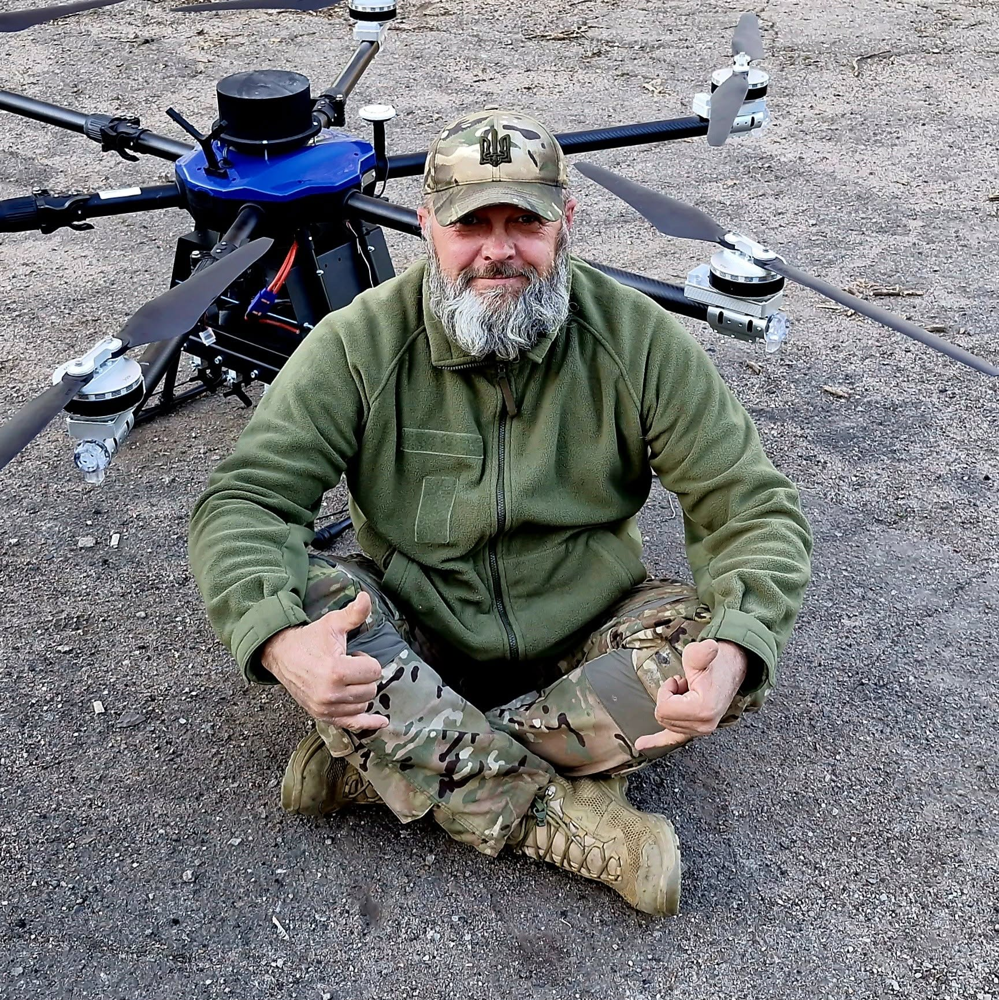

Нестор Воля
Доказовий аналіз відкритих джерел, підготовка аналітичних матеріалів, робота з публічними кейсами акторів і мереж, автоматизація збору й структурування даних.

Основні напрями
OSINT і перевірка джерел
Пошук, звірка, архівація та аналіз відкритих джерел: медіа, реєстри, домени, веб-архіви, соціальні сигнали, публічні профілі.
Інформаційні операції
Аналіз наративів, медійних слідів, публічної присутності, мереж поширення та контексту комунікацій.
AI/OSINT-автоматизація
Технічні пайплайни для збору, структурування, витягу сутностей, виявлення суперечностей і підготовки звітних матеріалів.
Практичний стек
- OSINT: Wayback Machine, WHOIS/DNS, BuiltWith, urlscan, Google operators, source registry.
- Data / AI: Python, FastAPI, PostgreSQL, pgvector, SQLite, JSON Schema, RAG, NER, Gemini, Claude, NotebookLM, Perplexity, LLM Guard, agentic workflows (tool use, multi-step orchestration).
- Automation: Playwright, Crawl4AI, Jina, Exa, Tavily, n8n (agentic workflows), API pipelines, browser automation.
- Graphs: Gephi, Neo4j, NetworkX, pyvis, PageRank, modularity, weighted degree.
- Runtime / VPS: Docker, VPS Linux server (nginx, Traefik, Let's Encrypt, reverse proxy, SSL/TLS, контейнерна ізоляція), Ubuntu/Linux, Git/GitHub, smoke checks, backup-before-change discipline.
Вибрані публічні підтвердження
Rentafont — OSINT-розслідування
Опубліковане дослідження · dev.ua / DOU
Публічна історія, інфраструктура, партнерська мережа та зв'язки з російським ринком; технічний peer review у DevOps-спільноті.
Russia Cristiana / Braschi — мережа впливу РФ
Аналітичний звіт + actor profile
OSINT-розслідування м'якої сили РФ на осі Італія–Москва–Україна: профілювання акторів, реконструкція хронології, мапування мережі.
Чекаль / Wikipedia case
Ручний пошук, перевірка і структурування джерел
Складний кейс ручного збору та звірки публічних матеріалів для енциклопедичного формату.
AI для OSINT і розвідки
robot_dreams · 2026
Курсове навчання та проєктні артефакти застосування AI в OSINT-аналізі.